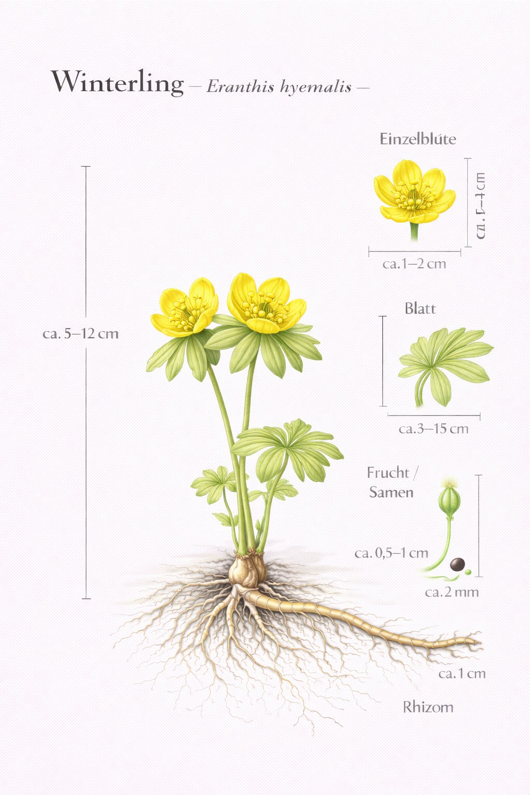

Nr. 14 · Frühblüher im Wald
Winterling
Eranthis hyemalis
Leuchtend gelb im tiefsten Winter – der früheste Frühblüher überhaupt.

Strategie des Extremfrühstarters
Der Winterling blüht manchmal schon im Januar, wenn noch Schnee liegt. Sein Geheimnis: Er hat Energie in der Knolle gespeichert und wartet weder auf Wärme noch auf Konkurrenten. Der grüne Blattkragen ist kein Kelch, sondern ein Hochblatt – er umhüllt die Blüte wie ein Mini-Gewächshaus und wirft Sonnenwärme zurück.
Die Blüte als Parabolspiegel
Im Inneren einer Winterling-Blüte ist es bis zu 6 Grad wärmer als draussen. Die becherförmige Blüte bündelt Sonnenwärme wie ein Parabolspiegel auf die Mitte. Für frühe Hummelköniginnen nach dem Winterschlaf ist das eine lebensrettende Wärmetankstelle – und ein wunderbares Beispiel, wie Pflanzen Physik beherrschen.
Wissenswertes & Merksätze
Echter Winterblüher
In milden Jahren schon im Januar – für frühe Hummelköniginnen kann er die erste Mahlzeit nach dem Winterschlaf sein.
Gartenflüchtling
In Deutschland nicht heimisch, aber aus Parks in Wälder eingewandert. Wann ein Neubürger zur heimischen Flora zählt – eine Frage, die Ökologen diskutieren.
Wärmefalle demonstrieren
Ein Thermometer ins Blüteninnere halten – der Temperaturunterschied ist tatsächlich messbar!